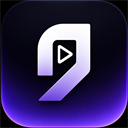

Conecte sua conta uma vez
Abra o painel web e clique em conectar. A extensão recebe o código automaticamente; colar o código continua disponível como alternativa.
Seu acesso de cortesia ou assinatura será reconhecido do mesmo jeito.

SUA LIVE, MAIS SIMPLES
A extensão vai localizar automaticamente tudo o que precisa na tela.
Abra o painel web e clique em conectar. A extensão recebe o código automaticamente; colar o código continua disponível como alternativa.
Produtos, chat, resposta, vendas, análises, avisos e botões da LIVE são encontrados automaticamente — sem configurar áreas da tela.
Use a Demonstração guiada para ver uma vitrine, uma pergunta, uma venda e um pitch de voz funcionando sem precisar iniciar uma LIVE real.
Abra a página da sua LIVE, deixe “Respostas por voz” ligado e mantenha o painel aberto. A Pitch AI cuida do restante.
Controle principal da inteligência artificial
A IA lê o chat e responde os espectadores com voz natural. É o mesmo botão “👁️ Ligar IA” da barra da live.
A IA digita e envia respostas curtas no chat do TikTok. Possui intervalo anti-spam e não substitui um texto que você estiver digitando.
Prepara 10–15 textos por hora e reaproveita cada áudio. Evita gerar voz de novo a cada repetição.
O intervalo é sorteado entre o mínimo e o máximo para não soar mecânico.
Perguntas iguais sobre preço, frete, tamanho e uso reaproveitam a resposta por uma hora, somente quando o produto também é o mesmo.
Antes de a IA responder por voz ou texto, você vê a resposta e aprova. Bom para os primeiros dias de live. É o mesmo botão “👀 Confirmar” da barra.
Agradece o comprador por voz assim que a compra é detectada.
Evita bloqueios e mantém a live segura
Filtra termos proibidos pelas diretrizes do TikTok Shop.
Ignora provocações, ofensas e comentários irrelevantes.
Respostas mais curtas e prudentes durante picos de público.
O que a IA nunca deve falar nem responder na sua live
Já vem com … palavras bloqueadas de fábrica. Se alguém escrever uma delas no chat, a IA não responde nem repete.
As suas palavras somam com a proteção padrão — elas não substituem a lista de fábrica.
Assuntos que a IA deve tratar como prioridade ao responder.
Desfixa e fixa novamente o produto selecionado na LIVE
A extensão sorteia um intervalo entre o mínimo e o máximo.
Marque os produtos que a extensão poderá fixar
Escolha o tom de voz perfeito para seu público
Ajuste para parecer 100% humano.
Nível do áudio enviado para a live.
Ouça a IA e controle quando você quer falar
Toca o som da IA também nos seus fones de ouvido.
Pausa a IA temporariamente enquanto você aperta uma tecla para falar.
Use vozes diferentes para saudações, ofertas e despedidas
Carregue um vídeo e envie imagem e áudio diretamente ao TikTok.
Depois de ativar, abra Configurações de áudio e vídeo no TikTok e escolha Pitch AI — Câmera Virtual e Pitch AI — Microfone Virtual.
Use os controles reais detectados no Gerenciador de LIVE
Procurando automaticamente os controles da LIVE…
A live começará automaticamente na hora programada.
Finaliza a live automaticamente após a duração configurada.
Opção avançada — normalmente pode ficar desligada
Revise uma única resposta antes de ela ser enviada por texto, falada ou usada nos dois canais ativos.
Quando ligado, aparece uma confirmação pequena na página da LIVE. Respostas não confirmadas são descartadas após 25 segundos para não acumular.
A extensão encontra e recupera cada área sem apontamento manual
Confira o fluxo completo sem iniciar uma LIVE real
Gera mensagens e vendas simuladas até você desligar.
Testes rápidos:
O teste completo cria uma vitrine, recebe uma pergunta, registra uma venda e executa um pitch.
Abra novamente o tutorial de uso